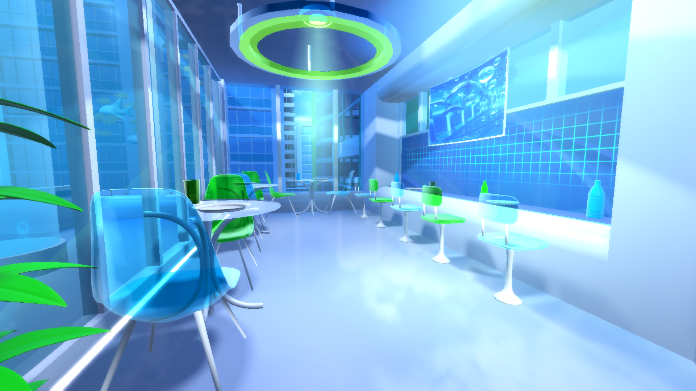
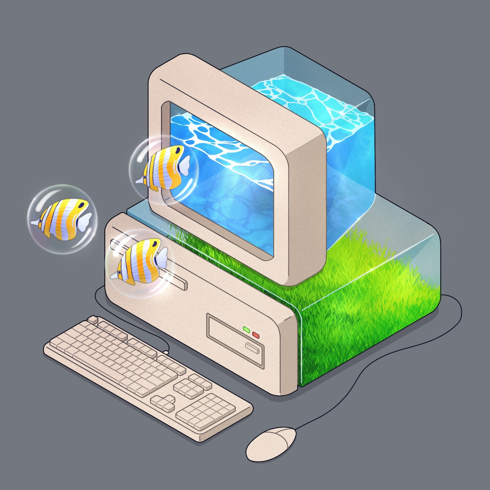
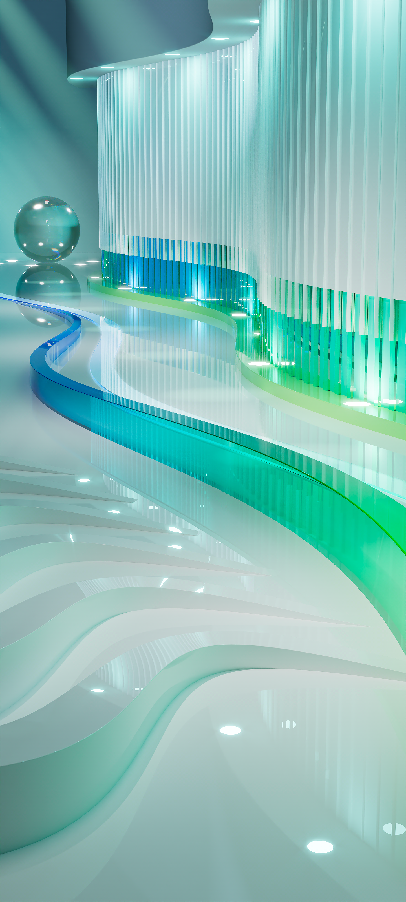
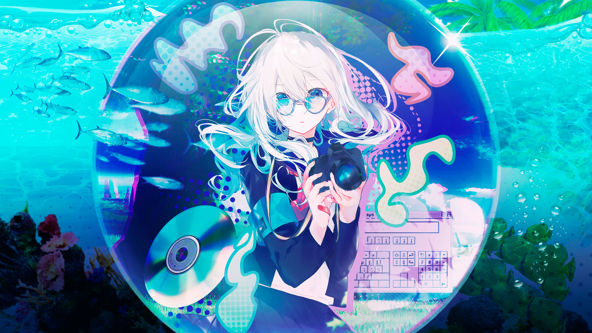

Restore the Frutiger Aero Dream
Immerse your desktop in skeuomorphic beauty. Liquid animations, authentic glass translucency, tactile media skins, and the nostalgic soundscapes of computing's most optimistic era.
curl -fsSL https://raw.githubusercontent.com/gesttaltt/frutiger-aero-optimizer/main/install.sh | bash
The Transformation
Slide to experience the difference between flat modern monotony and high-gloss Frutiger Aero vibrancy.
The 2007 Audio Experience
Click any button below to audition the authentic stereo sound events included with the suite.
Aurora Wallpapers Gallery
Included in ultra-high resolution with automated multi-monitor desktop binding.

Aero Blue Horizon
Download 4K{kind=link}

Aquatic Coral Glass
Download 4K{kind=link}

Emerald Organic Waves
Download 4K{kind=link}

Vista Classic Aurora
Download 4K{kind=link}
Everything Built For You
Engineered with safety, performance, and historical authenticity in mind.
True Glass Compositing
Real hardware-accelerated blur, refraction, and specular top highlights powered by Kvantum (Linux) and DWMBlurGlass (Windows).
Liquid & Bubble Physics
Wobbly windows, springy bouncy scroll physics, CoverSwitch 3D Flip, and smooth cubic-bezier window animations.
Full App Immersion
Automated skinning for VLC (Windows Media Player 11), Spotify (WMPotify), Discord (AeroCord), and Firefox Glass.
Mathematical Safety
Captures exact state into ~/.frutiger_aero_state.sh or System Restore Points before making changes. One flag --restore cleanly reverses everything.
Hardware Optimization
GPU-specific OpenGL pipeline configuration (NVIDIA/AMD/Intel), automated journal cleanup, and zRAM swap tuning.
High-Resolution Aurora Wallpapers
Pre-packaged ultra-HD iconic wallpapers with automated desktop binding across KDE Plasma 5/6, GNOME, Xfce, and Windows.
Supported Operating Systems
Automated & Verified| Platform | Status | Supported Releases | Features |
|---|---|---|---|
| 🐧 Kubuntu / KDE Plasma | Master (Tier 1) | 22.04 LTS, 24.04 LTS, Plasma 5 & 6 | Full Look & Feel, Kvantum, Flip3D, Aurorae, SDDM, Plymouth |
| 🐧 Ubuntu (GNOME) | Stable | 22.04 LTS, 24.04 LTS (GNOME 42+) | GTK3/4 Windows 7 Theme, Crystal Remix Icons, Wallpaper |
| 🐧 Xubuntu (Xfce) | Stable | 22.04 LTS, 24.04 LTS | Aero-Glass Xfwm4, Picom Blur, Sounds, VLC & Firefox Mods |
| 🪟 Windows 10 / 11 | Master (Tier 1) | Win 10 (2004+), Win 11 (22H2+) | DWMBlurGlass, System Audio, RGBA Icons, WMP11 VLC, Spicetify |